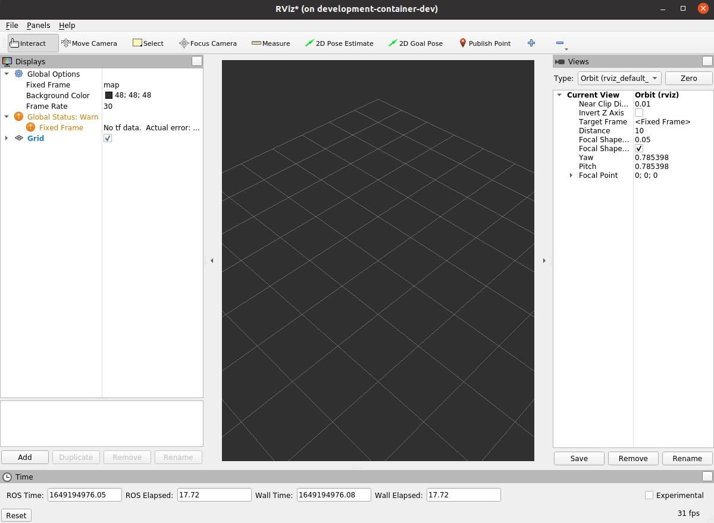

development-container
The development container allows developers to sandbox repository dependencies from their host machine while allowing them to use familiar development tools.
TL;DR
Build a new development image
Note: The REPO variable is defined in .env
Start an interactive development container
Build the repository in the container
Test
To test that your container is working with graphics
Dependencies
Repository dependencies are built into the development image. This insulates the developer from potentially conflicting dependencies on their host while preventing development from accidentally depending on host packages and configurations. This uniform development environment should also make it easier for developers to collaboratively troubleshoot issues.
Rebuilding image
As repository dependencies change, the development image will have to be rebuilt. While early on this can happen frequently, dependencies tend to change more slowly later in a project. Unless otherwise noted, it is a good habit to update your image once a sprint.
<a id="ccache"></a> ccache
ccache allows previous builds to speed up future builds. As the container is not persistent, we need to map the cache to the host so it can be reused in subsequent instantiations of the container. On the host, create the cache directory
This will then be mapped to /home/username/.ccache in the container.
Volume mapping
While the container itself by default is not persistent, several host directories are mapped into the container including
- repository source code
- ssh keys
- git configuration
- host credentials
- X11 connection
This allows for a more seamless development environment for
- building source
- in container committing with your user
- graphical tool use
The full set of volume maps can be read in the compose file.
git
Commits can be done from directly within the container, with the same host user.
Graphics
Running rviz from within the container should produce a graphical window on the host.

Editing
As the repository source is volume mapped into the container, it can be edited outside of the container and changes are immediately reflected inside the container. This means you can use your existing host tools (vim, atom, sublime, vs code) to develop, and build in the container.
Prerequisites
docker
Taken from https://docs.docker.com/engine/install/ubuntu/
Check version
If docker is already installed, the below steps may not be required
The development image was tested with version 20.10.12.
Download and install
Note, the above script does not cover removing old versions.
Post actions
Adding yourself to the docker group and refreshing shell obviates the need to run sudo with docker.
docker compose v2
Taken from https://docs.docker.com/compose/cli-command/#install-on-linux
Download release
Apply permissions
Test
nvidia-docker
TODO: It is unconfirmed if nvidia-docker is required on hosts with nvidia gpus. Currently, rviz2 has been tested with
nvidia-dockerand nvidia gpu- no
nvidia-dockerand intel gpu and it produced comparable frame rates to the host. There is also a question if this is obviated by installing the gpu driver in the container and if that is best practice.
Alias
While developing a tool on top of another tool can come with challenges, some may prefer to at least have some simple aliases to reduce the typing boilerplate.
As an aside, a handy way to find a previous command is
to rerun the command using the offset number given from history
Troubleshooting
ccache cannot compile
Likely, the host ccache directory in your home directory was not created properly. Ensure that the directory is created and owned by the host user.